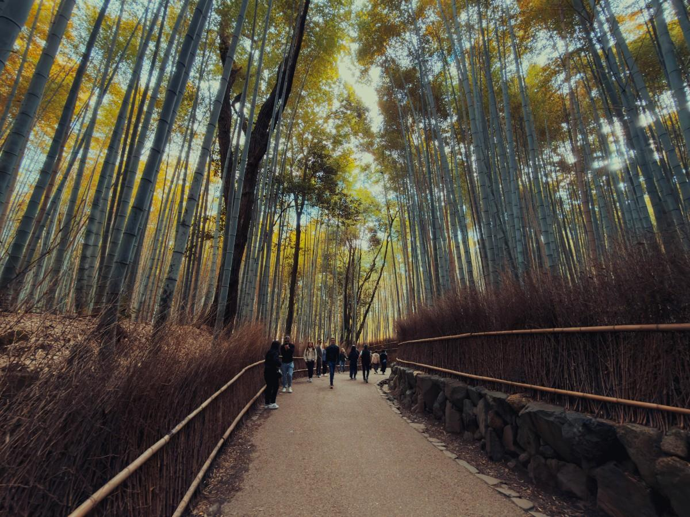

The cultural heart of Japan filled with temples and traditions
Kyoto represents the traditional soul of Japan. As the former capital, it is filled with centuries-old temples, shrines, wooden houses, and cultural landmarks. Walking through Kyoto feels like stepping into another era, especially in areas like Gion or Arashiyama. The city is quieter and more reflective compared to Tokyo or Osaka, offering a slower pace and a deeper cultural atmosphere. Every season transforms Kyoto differently — cherry blossoms in spring, lush greenery in summer, vibrant leaves in autumn, and peaceful snow in winter

Peaceful, historic, calm, spiritual
Kyoto is perfect for those who want to experience authentic Japanese culture and history. It’s calm, beautiful, and deeply rooted in tradition, making it ideal for a more peaceful and meaningful experienc